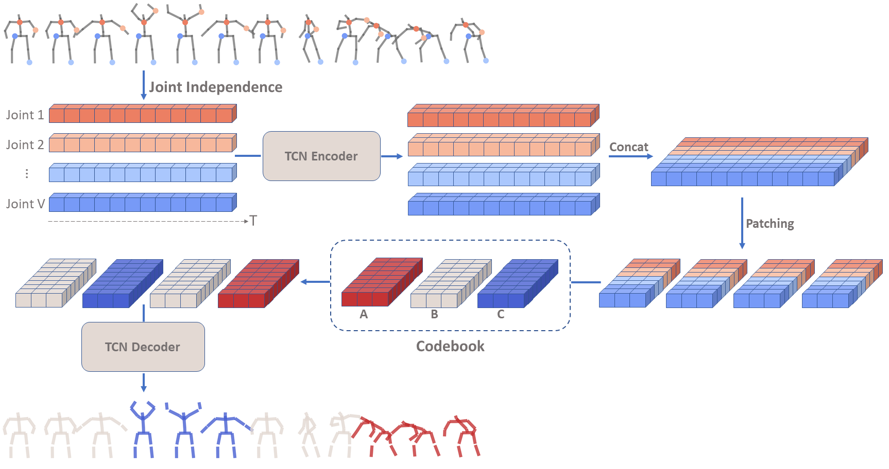

Skeleton Motion Quantization (SMQ)
Given a set of skeleton sequences, our approach discovers actions that are semantically consistent across all sequences. The discovered actions correspond to clusters of learned motion words in the codebook. The model first encodes the skeleton sequences into a joint-based disentangled embedding space. Each embedded sequence is then divided into short non-overlapping temporal patches and a codebook with K motion words is learned for the entire dataset via a patch-based quantization process, which assigns each patch to its nearest motion word using Euclidean distance. This assignment directly provides the segmentation of each sequence based on the motion word indices. In order to learn meaningful representations, the decoder reconstructs the input sequences from the quantized patches, where each patch is replaced by its corresponding motion word.
